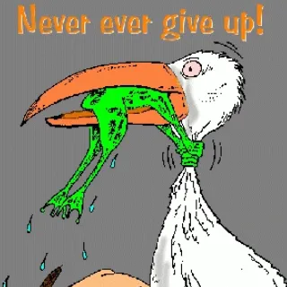

The Noble lectures — a characteristic feature of the Earth, Atmospheric and Planetary Physics group in the Physics department of the University of Toronto — occur at the end of the winter term and are one of the biggest events of the year. Naturally, the entire department waits with bated breath for the insights offered by the speaker, not to forget the numerous informal opportunities to interact with peers — free food included (a dominant means of graduate-student sustenance). This piece is about this year's speaker.
2024 saw Professor Eli Tziperman from the Department of Earth and Planetary Sciences and School of Engineering and Applied Sciences, Harvard University, deliver lectures over five consecutive days. Every year the specialisation of the speaker alternates between theory and observations. This time it was theory, and I was excited about it.
An optimally dynamic person
Eli has an optimally dynamic personality. To arrive at it from the context of fluid mechanics — the cornerstone of atmospheric and oceanic physics — the most dynamic state would be that of turbulence. However, turbulence is also chaotic, hinting away from organisation or order. On the other extreme would be laminar flows: simple and otherwise mundane flows that show little time variability. There is an optimum state of dynamism in flows neither completely laminar nor completely turbulent, but fundamentally somewhere in between. If we were to personify such a flow, I would call that person optimally dynamic. Eli is such a person. His flow had great variety, and at the same time all of it was extremely grounded. Okay, at this point it is important to set the disclaimer that analogies such as these are artistic and may have varied interpretations. Nonetheless, you get the impression, I hope.
This was reflected in his lectures, his interactions with students and other professors alike, and the messages he planned to deliver by the end of the season. I feel such people are rare nowadays. My image of education and science was developed in my undergraduate back in India, by very similar people who were able to make students glance beyond textbooks, exams and job applications — to show how beautiful nature and the universe is. This reminds me of a song called Saturn, by Sleeping At Last: "How rare and beautiful it is to even exist … The Universe was made just to be seen by my eyes." A really long time after I came to Canada did I see someone to whom survival was only a tiny part of existence — one who believed in their own capacity to positively impact the beings around them. A true academic inspiration.
Climate surprises: Warm and Cold, Past and Future
Eli named the lecture series "Climate surprises: Warm and Cold, Past and Future." I should say that is a rather optimistic title for a climate-related discourse. Most people these days would carry red flags of climate change to signal impending danger, often times as a gimmick to gather attention and hence money. Eli's approach was different. While a ton of his supervised research — that he humbly and rightfully credited to his hard-working students — focused on adverse effects of climate change, the way he contextualised the results definitely held promises for a hopeful future.
He drew our attention to historical events where predictions about the future met their fortunate and timely demise because of inventions or science that changed the world. The Great Manure Crisis of 1894 seemed to be his favourite example: people had envisaged horses drawing carriages to be so plentiful that the streets would flood with manure — they even constructed houses way above ground level to prevent it from coming into homes. However, this never turned into reality owing to the invention of the internal combustion automobile. Eli was optimistic that something similar was not entirely improbable to happen even for climate change. He also talked about the Global Cooling predictions made by the scientific community in the early 1970s, signalling an upcoming Ice Age, only to be met with a polar shift to Global Warming in the next few decades. And if optimism was not entirely obvious from his presentation, he had the last slide of his last talk literally saying: "Be optimistic 🙂"

He claims to be the frog in this cartoon.
A great communicator
What struck me about his style of presentation was how deliberate it was. He paused after every important point. He often asked "questions about the question?" — making space for confusion before moving on. And in a memorable structural choice, each lecture contained two complete ideas for the price of one, such that you walked away with more than you came for.
In a personal interaction, we spoke about the mid-PhD crisis — its resemblance to the mid-life crisis, and how one navigates the feeling of drift that accompanies a long project. He mentioned an Italian café he loved, the time he spent in Israel, swimming in the ocean, and adjusting to a new country as an international student. It struck me how much of a person's experience of science is inseparable from their experience of life.